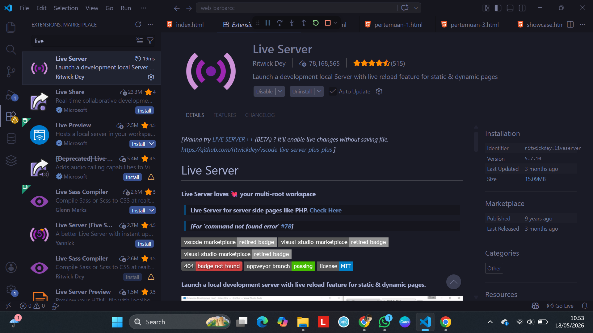

1. Siapin Senjata Lu (VS Code)
Kita nggak ngetik kode di Microsoft Word atau Notepad bawaan Windows, Coy. Kita butuh teks editor khusus bernama Visual Studio Code biar kodenya warna-warni, otomatis rapi, dan gampang dibaca pas nyari error.
Langkah 1: Download & Install VS Code
Pergi ke situs resmi vscode dan download sesuai OS laptop lu (Windows/Mac).

Langkah 2: Install Ekstensi Live Server
Buka menu Extensions (ikon kotak empat di kiri VS Code), cari "Live Server", lalu klik Install. Ini biar web lu bisa dibuka otomatis di browser pas lu klik Save.

2. Checklist Kesiapan Tempur
Coba lu klik kotak di bawah ini buat mastiin laptop temen-temen lu udah ready semua sebelum mulai ngoding:
3. Tiga Aturan Emas Coding
Sebelum lu asal ngetik kode, pahami dulu hukum alam ini biar kodingan lu gak mendadak ngambek atau error sepele.
1. Haram Pakai Spasi
Jangan pernah pakai spasi buat nama file atau folder web. Ganti pakai tanda strip `-`.
Benar: web-barbarcc
Salah: web barbarcc
2. Aturan TAB (Indentasi)
Biasain pakai tombol TAB di keyboard biar kodingan lu menjorok ke dalam dengan rapi. Struktur yang rapi bakal menyelamatkan mata lu pas nyari letak error.
3. Case Sensitive
Huruf BESAR dan huruf kecil itu dianggap BEDA banget sama komputer. File bernama Index.html tidak akan kebaca sama sistem hosting, wajib tulis index.html.
4. Download Presentasi Modul
Ambil materi presentasi rangkuman teori hari ini berbentuk file PDF buat dibaca ulang kapan aja lu butuh contekannya.
Download PDF Modul 1 📥